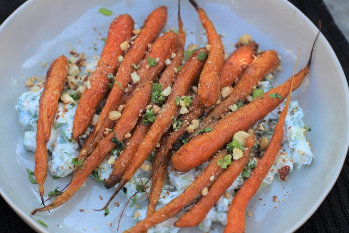

Roast Carrot Raita

This is what the raita should look like when finished.
Cumin and fennel compliment the yogurt in this raita. Serve alongside your favorite Indian recipes.
Ingredients:
- 10 Small Thin Carrots
- 1 tsp Oil
- 1/4 tsp Salt
- 1/4 tsp Black Pepper
- 1 tsp Cumin Seed
- 1 tsp Fennel Seed
- 1 Dried Chilli
- Pinch of Salt
- 7oz Yogurt
Steps:
- Preheat the oven to 350F. Place the carrots on a baking tray and sprinkle with oil, salt and pepper. Toss the carrots so that they are evenly covered.
- In a small pan toast the cumin seeds, fennel seeds, and red chilli on a low heat for 2 minutes.
- Put the yogurt into a small bowl. Add half the spices and stir.
- Spread the yogurt on a serving plate. Place the roasted carrots on top of the yogurt and sprinkle with remaining spices.